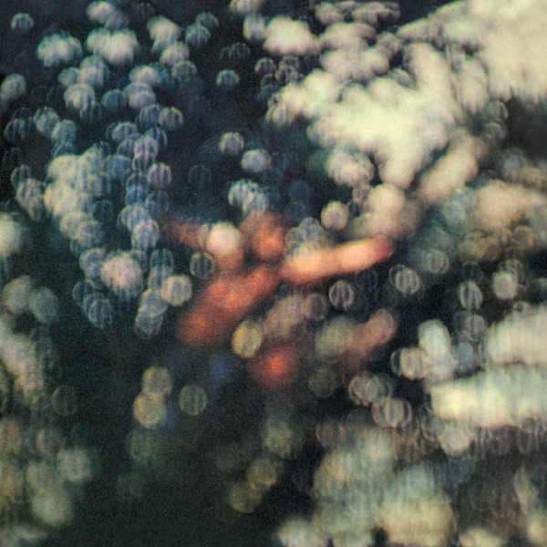

Pink Floyd
About Pink Floyd
Pink Floyd is a band comprised of Syd Barret, Roger Waters, David Gilmour, Richard Wright, and Nick Mason.
TBR STANDS FOR TO BE RATED. This means tracks with TBR in front of them haven't actually been rated and instead have a dummy rating.
16. More (Original Film Soundtrack) ★★★★★
More (Original Film Soundtrack) is Pink Floyd's 3rd LP.
- TBR Cirrus Mirror ★★★★★
- TBR The Nile Song ★★★★★
- TBR Crying Song ★★★★★
- TBR Up the Khyber ★★★★★
- TBR Green is the Colour ★★★★★
- TBR Cymbaline ★★★★★
- TBR Party Sequence ★★★★★
- TBR Ibiza Bar ★★★★★
- TBR More Blues ★★★★★
- TBR Quicksilver ★★★★★
- TBR A Spanish Piece ★★★★★
- TBR Dramatic Theme ★★★★★
15. Ummagumma ★★★★★
Ummagumma is Pink Floyd's 4th LP.
- TBR Astronomy Domine (Live) ★★★★★
- TBR Careful with that Axe, Eugene (Live) ★★★★★
- TBR Set the Controls for the Heart of the Sun (Live) ★★★★★
- TBR A Saucerful of Secrets (Live) ★★★★★
- Speed of Sound ★★★★★
- TBR Sysyphus Pt. 1 ★★★★★
- TBR Sysyphus Pt. 2 ★★★★★
- TBR Sysyphus Pt. 3 ★★★★★
- TBR Sysyphus Pt. 4 ★★★★★
- TBR Grantchester Meadows ★★★★★
- TBR Several Species of Small Furry Animals Gathered Together In A Cave and Grooving with a Pict ★★★★★
- TBR The Narrow Way Pt. 1 ★★★★★
- TBR The Narrow Way Pt. 2 ★★★★★
- TBR The Narrow Way Pt. 3 ★★★★★
- TBR The Grand Vizier's Garden Party Pt. 1: Entrance ★★★★★
- TBR The Grand Vizier's Garden Party Pt. 2: Entertainment ★★★★★
- TBR The Grand Vizier's Garden Party Pt. 3: Exit ★★★★★
14. A Saucerful of Secrets ★★★★★

A Saucerful of Secrets is Pink Floyd's 2nd album.
- TBR Let There Be More Light ★★★★★
- TBR Remember a Day ★★★★★
- TBR Set the Controls for the Heart of the Sun ★★★★★
- TBR Corporal Clegg ★★★★★
- TBR A Saucerful of Secrets ★★★★★
- TBR See-Saw ★★★★★
- TBR Jugband Blues ★★★★★
13. The Piper at the Gates of Dawn ★★★★★

The Piper at the Gates of Dawn is Pink Floyd's 1st LP.
- TBR Astronomy Domine ★★★★★
- TBR Lucifer Sam ★★★★★
- TBR Matilda Mother ★★★★★
- TBR Flaming ★★★★★
- TBR Pow R. Toc H. ★★★★★
- TBR Take Up Thy Stethoscope and Walk ★★★★★
- TBR Interstellar Overdrive ★★★★★
- TBR The Gnome ★★★★★
- TBR Chapter 24 ★★★★★
- TBR The Scarecrow ★★★★★
- TBR Bike ★★★★★
12. The Endless River ★★★★★
The Endless River is the 15th Pink Floyd LP.
- TBR Side 1, pt. 1: Things Left Unsaid ★★★★★
- TBR Side 1, pt. 2: It's What We Do ★★★★★
- TBR Side 1, pt. 3: Ebb and Flow ★★★★★
- TBR Side 2, pt. 1: Sum ★★★★★
- TBR Side 2, pt. 2: Skins ★★★★★
- TBR Side 2, pt. 3: Unsung ★★★★★
- TBR Side 2, pt. 4: Anisina ★★★★★
- TBR Side 3, pt. 1: The Lost Art of Conversation ★★★★★
- TBR Side 3, pt. 2: On Noodle Street ★★★★★
- TBR Side 3, pt. 3: Night Light ★★★★★
- TBR Side 3, pt. 4: Allons-y (1) ★★★★★
- TBR Side 3, pt. 5: Autumn '68 ★★★★★
- TBR Side 3, pt. 6: Allons-y (2) ★★★★★
- TBR Side 3, pt. 7: Talkin' Hawkin' ★★★★★
- TBR Side 4, pt. 1: Calling ★★★★★
- TBR Side 4, pt. 2: Eyes to Pearls ★★★★★
- TBR Side 4. pt. 3: Surfacing ★★★★★
- TBR Side 4, pt. 4: Louder Than Words ★★★★★
11. Atom Heart Mother ★★★★★
Atom Heart Mother is Pink Floyd's 4th LP.
- TBR Atom Heart Mother ★★★★★
- TBR If ★★★★★
- TBR Summer '68 ★★★★★
- TBR Fat Old Sun ★★★★★
- TBR Alan's Psychedelic Breakfast ★★★★★
10. Obscured By Clouds ★★★★★

Obscured By Clouds is Pink Floyd's 7th LP
- TBR Obscured By Clouds ★★★★★
- TBR When You're In ★★★★★
- TBR Burning Bridges ★★★★★
- TBR The Gold It's In the... ★★★★★
- TBR Wot's... Uh the Deal? ★★★★★
- TBR Mudmen ★★★★★
- TBR Childhood's End ★★★★★
- TBR Free Four ★★★★★
- TBR Stay ★★★★★
- TBR Absolutely Curtains ★★★★★
9. Meddle ★★★★★
Meddle is the 6th LP by Pink Floyd.
- TBR One of These Days ★★★★★
- TBR A Pillow of Winds ★★★★★
- TBR Fearless ★★★★★
- TBR San Tropez ★★★★★
- TBR Seamus ★★★★★
- TBR Echoes ★★★★★
8. The Final Cut ★★★★★
The Final Cut is Pink Floyd's 12th LP.
- TBR The Post War Dream ★★★★★
- TBR Your Possible Pasts ★★★★★
- TBR One of the Few ★★★★★
- TBR When the Tigers Broke Free ★★★★★
- TBR The Hero's Return ★★★★★
- TBR The Gunner's Dream ★★★★★
- TBR Paranoid Eyes ★★★★★
- TBR Get Your Filthy Hands Off My Desert ★★★★★
- TBR The Fletcher Memorial Home ★★★★★
- TBR The Final Cut ★★★★★
- TBR Not Now John ★★★★★
- TBR Two Suns in the Sunset ★★★★★
7. A Momentary Lapse of Reason ★★★★★
A Momentary Lapse of Reason is Pink Floyd's 13th LP.
- TBR Signs of Life ★★★★★
- TBR Learning to Fly ★★★★★
- TBR The Dogs of War ★★★★★
- TBR One Slip ★★★★★
- TBR On the Turning Away ★★★★★
- TBR Yet Another Movie ★★★★★
- TBR Round and Around ★★★★★
- TBR A New Machine Pt. 1 ★★★★★
- TBR Terminal Frost ★★★★★
- TBR A New Machine Pt. 2 ★★★★★
- TBR Sorrow ★★★★★
6. Animals ★★★★★
Animals is Pink Floyd's 10th LP.
- Pigs On the Wing, Pt. 1 ★★★★★
- TBR Dogs ★★★★★
- TBR Pigs (Three Different Ones) ★★★★★
- TBR Sheep ★★★★★
- TBR Pigs On the Wing, Pt. 2 ★★★★★
5. On An Island ★★★★★
On An Island is the 3rd solo album by David Gilmour.
- Castellorizon ★★★★★
- TBR On An Island ★★★★★
- TBR The Blue ★★★★★
- TBR Take A Breath ★★★★★
- TBR Red Sky at Night ★★★★★
- TBR This Heaven ★★★★★
- TBR Then I Close My Eyes ★★★★★
- TBR Smile ★★★★★
- TBR A Pocketful of Stones ★★★★★
- TBR Where We Start ★★★★★
4. The Division Bell ★★★★★
The Division Bell is Pink Floyd's 14th LP.
- Cluster One ★★★★★
- What Do You Want from Me ★★★★★
- Poles Apart ★★★★★
- Marooned ★★★★★
- A Great Day for Freedom ★★★★★
- Wearing the Inside Out ★★★★★
- Take it Back ★★★★★
- Coming Back to Life ★★★★★
- Keep Talking ★★★★★
- Lost for Words ★★★★★
- High Hopes ★★★★★
3. Wish You Were Here ★★★★★
Wish You Were Here is the 9th LP by Pink Floyd.
- Shine On You Crazy Diamond Pts. 1-5 ★★★★★
- Welcome to the Machine ★★★★★
- Have A Cigar ★★★★★
- Wish You Were Here ★★★★★
- Shine On You Crazy Diamond Pts. 6-9 ★★★★★
2. The Dark Side of the Moon ★★★★★
The Dark Side of the Moon is the 8th LP by Pink Floyd.
- Speak to Me ★★★★★
- Breathe (In the Air) ★★★★★
- On the Run ★★★★★
- Time ★★★★★
- The Great Gig in the Sky ★★★★★
- Money ★★★★★
- Us and Them ★★★★★
- Any Colour You Like ★★★★★
- Brain Damage ★★★★★
- Eclipse ★★★★★
1. The Wall ★★★★★

The Wall is Pink Floyd's 11th LP.
- In The Flesh? ★★★★★
- The Thin Ice ★★★★★
- Another Brick In The Wall, Pt. 1 ★★★★★
- The Happiest Days of Our Lives ★★★★★
- Another Brick In The Wall, Pt. 2 ★★★★★
- Mother ★★★★★
- Goodbye Blue Sky ★★★★★
- Empty Spaces ★★★★★
- Young Lust ★★★★★
- One of My Turns ★★★★★
- Don't Leave Me Now ★★★★★
- Another Brick In The Wall, Pt. 3 ★★★★★
- Goodbye Cruel World ★★★★★
- Hey You ★★★★★
- Is There Anybody Out There? ★★★★★
- Nobody Home ★★★★★
- Vera ★★★★★
- Bring The Boys Back Home ★★★★★
- Comfortably Numb ★★★★★
- The Show Must Go On ★★★★★
- In The Flesh ★★★★★
- Run Like Hell ★★★★★
- Waiting For The Worms ★★★★★
- Stop ★★★★★
- The Trial ★★★★★
- Outside the Wall ★★★★★